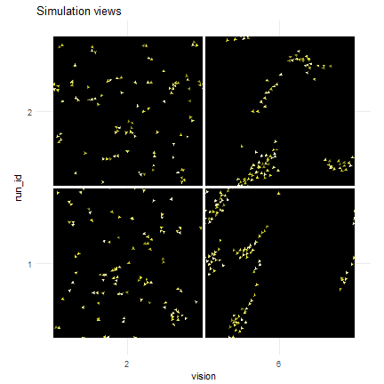
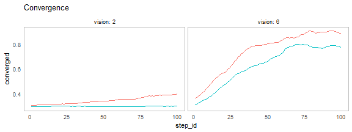
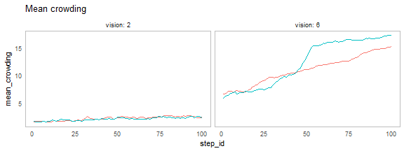
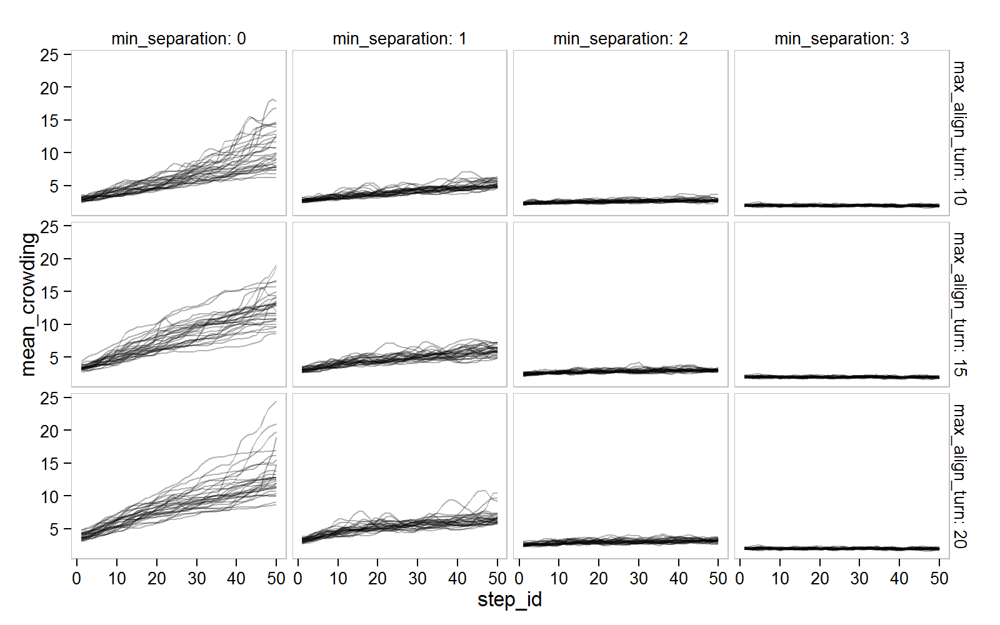

Flocking Example
This example is using NetLogo Flocking model (Wilensky, 1998) to show simple measure definition and observation in parameter space. It is the first in a series of parameter space exploration of the Flocking model.
Two Measures
Two measures of self-organization will be defined:
- converergence is based on variance of birds’ orientations (Stonedahl, 2011)
\[ converged = 1 - stdev(\{ v_x(b) | b \in B \}) - stdev(\{ v_y(b) | b \in B \}) \]
- mean crowding is average group size as experienced by individual (Reiczigel et al., 2008)
\[ mean\_crowding = \frac{\sum_{b \in B} (|flockmates_b| + 1)}{ |B| } \]
where \(v_x(b)\) and \(v_y(b)\) are the horizontal and vertical components of the velocity of bird b, \(flockmates_b\) are flockmates of bird \(b\) and \(B\) is the set of all birds.
experiment <- nl_experiment(
model_file = "models/Sample Models/Biology/Flocking.nlogo",
setup_commands = c("setup", "repeat 10 [go]"),
iterations = 100,
param_values = list(
world_size = 50,
population = 100,
vision = c(2,6)
),
step_measures = measures(
converged = "1 -
(standard-deviation [dx] of turtles +
standard-deviation [dy] of turtles) / 2",
mean_crowding =
"mean [count flockmates + 1] of turtles"
),
repetitions = 2,
random_seed = c(1, 4),
export_view = TRUE
)result <- nl_run(experiment) library(ggplot2)
nl_show_views_grid(result, x_param = "vision", y_param = "run_id",
img_gap = 0.01) + labs(title = "Simulation views")
nl_show_step(result, x = "step_id", y = "converged",
x_param = "vision", title = "Convergence")
nl_show_step(result, x = "step_id", y = "mean_crowding",
x_param = "vision", title = "Mean crowding")
Explore Temporal Measures
Initial (random) positions influence the resulting measures. To see the connection between measures and parameter values we have to run the simulation several times for each parameter set.
The example below explore the influence of min_separation and max_align_turn parameters on the convergence measure by running each parameter set 30 times and simply plotting all observations for different parameter values.
experiment <- nl_experiment(
model_file =
file.path(nl_netlogo_path(),
"models/Sample Models/Biology/Flocking.nlogo"),
setup_commands = c("setup", "repeat 10 [go]"),
#go_command = c("repeat 5 [go]"),
iterations = 50,
param_values = list(
world_size = 50,
population = 100,
min_separation = seq(from = 0, to = 3, by = 1),
max_align_turn = c(10, 15, 20)
),
mapping = c(
min_separation = "minimum-separation",
max_align_turn = "max-align-turn"),
step_measures = measures(
converged = "1 -
(standard-deviation [dx] of turtles +
standard-deviation [dy] of turtles) / 2",
mean_crowding =
"mean [count flockmates + 1] of turtles"
),
repetitions = 30,
random_seed = 1:30
)result2 <- nl_run(experiment, parallel = TRUE) Plot temporal measure with 2 varying parameters:
library(ggplot2)
nl_show_step(result2, x = "step_id", y = "converged",
y_param = "max_align_turn", x_param = "min_separation",
color = NA, alpha = 0.3)

library(ggplot2)
nl_show_step(result2, x = "step_id", y = "mean_crowding",
y_param = "max_align_turn", x_param = "min_separation",
color = NA, alpha = 0.3)
See also
See Categorical Criteria and Hyper Latinc Cube Sampling examples to learn how to explore parameter space with categorical evaluation.
Best-fit Criterion shows how to define single criterion evaluation expression and evaluate parameter space with full-factor design.